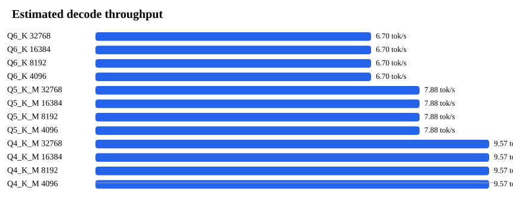
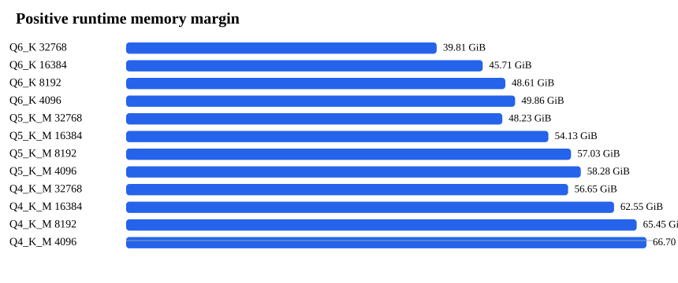

Compare Report
Quantization, context length, and backend tradeoffs for a local LLM run.
Best backendllama.cpp
Best quantQ6_K
Context32768
Verdictsmooth
Margin39.81 GiB
Decode6.7 tok/s
Best candidate is the first smooth/tight plan after risk, precision, context, speed, and memory margin sorting. Verdict counts: {"smooth": 16}
python3 -m local_llm_lab deploy --model llama-3.3-70b --quant Q6_K --ctx 32768 --backend llama.cpp --hardware fixture:apple-m4-max-128gb --out .local-llm-lab/deploy/llama-3.3-70b-q6_k-32768


16 of 16 plans visible. Click a column header to sort.
| Backend | Quant | Context | Verdict | Risk | Runtime GiB | Margin GiB | Decode tok/s | Deploy |
|---|---|---|---|---|---|---|---|---|
| llama.cpp | Q6_K | 32768 | smooth | low | 70.19 | 39.81 | 6.7 | |
| llama.cpp | Q6_K | 16384 | smooth | low | 64.29 | 45.71 | 6.7 | |
| llama.cpp | Q6_K | 8192 | smooth | low | 61.39 | 48.61 | 6.7 | |
| llama.cpp | Q6_K | 4096 | smooth | low | 60.14 | 49.86 | 6.7 | |
| llama.cpp | Q5_K_M | 32768 | smooth | low | 61.77 | 48.23 | 7.88 | |
| llama.cpp | Q5_K_M | 16384 | smooth | low | 55.87 | 54.13 | 7.88 | |
| llama.cpp | Q5_K_M | 8192 | smooth | low | 52.97 | 57.03 | 7.88 | |
| llama.cpp | Q5_K_M | 4096 | smooth | low | 51.72 | 58.28 | 7.88 | |
| llama.cpp | Q4_K_M | 32768 | smooth | low | 53.35 | 56.65 | 9.57 | |
| llama.cpp | Q4_K_M | 16384 | smooth | low | 47.45 | 62.55 | 9.57 | |
| llama.cpp | Q4_K_M | 8192 | smooth | low | 44.55 | 65.45 | 9.57 | |
| llama.cpp | Q4_K_M | 4096 | smooth | low | 43.3 | 66.7 | 9.57 | |
| llama.cpp | Q3_K_M | 32768 | smooth | low | 44.93 | 65.07 | 12.18 | |
| llama.cpp | Q3_K_M | 16384 | smooth | low | 39.03 | 70.97 | 12.18 | |
| llama.cpp | Q3_K_M | 8192 | smooth | low | 36.13 | 73.87 | 12.18 | |
| llama.cpp | Q3_K_M | 4096 | smooth | low | 34.88 | 75.12 | 12.18 |